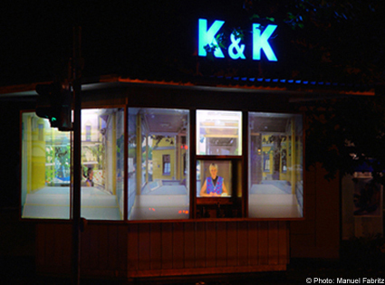

|

"Kiosk 1:1", 2002. Photography is the media of the past. What is visible on a print is irrevocably gone, or else it could not be available as a photograph. But it's not only gone, it's also really been there. A photograph, represents not only a situation, it's a witness or a trace of a concrete moment. Such a mechanically produced look can take us back to the past for a short time. Intensely observation of a photograph can supersede the present perception, and eclipse it with the photographic visibility. The photography gains its function as a witness and trace by its copy realism. Naomi Tereza Salmon utilizes this media peculiarity in her work "Kiosk 1:1", which above all has the indissoluble eclipse of past and present as its theme. Both layers confront each other and interlock. First of all it depends on the observer's perspective and the duration of the look, whether you perceive either a picture or the returned kiosk's owner, Mrs Hackerschmied in her working dress. An intrinsic perspective on the kiosk is the car drivers' one, in the best case a brief attentiveness, which does not allow them the time to recognize the picture character of the visible. The perception fluctuates from the present of the presented to the presentation quality of the photography, which aims at a past moment. Precisely observed: the owner and her kiosk, they themselves, refer to the shared past. But what is the former owner, Mrs H., doing in the empty and strangely de-functionalized building? Because the kiosk is not itself anymore, without its goods (them almost hiding its owner) it's lifeless, it's standing there as an architectural skeleton and relic, without baring a reference to its surrounding world. It becomes a window to another reality, to the past, within the framework of Salmon's artistic preoccupation. But the past looks back to the present reality through this window, and while passer-bys and cars try to leave this inhospitable intersection, the kiosk's owner watches quietly and stoically the movements around her. So both observe each other. Only the present hurries, because it has to manage a future, while on the other hand the past can observe its future calmly. It knows, what will have come. The kiosk is not only the framework, structuring the look in "Kiosk 1:1", it is, as a case, itself part of a(n) (all-German) past. It's an empty case and a frame of boards, a modern ruin. Its daily filling - printed paper, disappeared into the multifunctional department stores. Like any ruin it's a reflection on itself, of its former function. The return of Mrs Hackerschmied within Naomi Tereza Salmon's photographic work gives this reflection a strange turn, a new context, which contains past and present at the same time. Oliver Fahle Close Window All content copyright 2006 Naomi Tereza Salmon - all rights reserved |